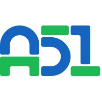

Experience · 2026, Paris
Research Intern, A51
Early-stage biotech start-up. Devised R&D strategy for the next technical proof of concept, contributed to research on long non-coding RNA, and built three agentic R&D workflows with Claude Code for specialized analysis tools.